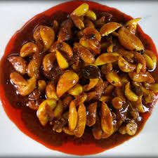

Traditional Homemade Pickles with Authentic Taste

KJ Garlic Pickle is made from fresh garlic cloves blended with traditional spices and premium-quality ingredients. It delivers a rich, spicy, tangy, and aromatic homemade taste that perfectly complements rice, chapati, dosa, idli, and other favorite meals.
📞 9567974820Our Garlic Pickle is prepared using a traditional family recipe that preserves the authentic homemade flavor. Every jar is crafted with carefully selected garlic cloves, ensuring freshness, quality, and the perfect balance of spice, aroma, and tanginess.